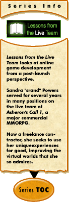

|
Lessons from the Live Team #3: Think Before You Shipby Sandra Powers Development on an MMO game doesn't stop once the game has launched. Indeed, your game will probably be in live development – that is, post-launch development – for far longer than it was in pre-launch development. More and more MMO games are coming to understand this concept and devote significant resources to live development. But many teams have not yet grasped the other side of the coin: that post-launch development doesn't start the day after you launch. If you want to have a successful live game then you need to plan for live from the very beginning. After all, you're not building the game for launch day – you're building it for the next 5-10 years. Figuring out the process of live – who will do what when, what distribution of content you will support, how everything will come together – is complicated but rewarding. Well, I find it rewarding, at least! But today I wanted to talk about some of the more technical aspects of planning for live: technical questions that will likely be settled before you even start thinking about the live process, but which nevertheless are going to severely impact that process. Ideally, you'd be building the engine specifically with live development in mind – and yet that so rarely seems to happen. Since your engine will probably have serious limitations, it is vital to understand how they affect your live development plans. This is one of the most fundamental and obvious pre-launch considerations for a live team. My goal is not to list these considerations exhaustively, but just to introduce some issues you may want to think about. How do you update?So what sort of tech is most important for live development? Well, the live process is all about updating the game, so perhaps the biggest question is: How do you update? Increasingly, even single-player games need to be concerned with this question. You launched your game, you found some bugs, you fixed those bugs – now how do you get the bug fixes out to your customers? For MMO games, of course, the question is more complicated. You aren't just propagating some bug fixes as they become available – you’re going to need to deal with a wide variety of update types and possibly several overlapping development cycles. And because you're probably going to be doing a whole lot of updating, you want to keep the process as transparent as possible for your subscribers, lest they leave for a game that doesn't punish them so much. Most teams start development with the expectation that they’ll have some sort of patching technology. But it pays to ask some specific questions about your engine's capabilities for fast, easy updating. For example:
What can you modify on the fly?Some games have made it a goal to allow major content additions without taking down the servers. In my opinion, that's an awful lot of painful, complicated work for relatively little benefit. But even setting that absolute goal aside, there should be a goodly set of things you can do while the server is running, including placing or deleting game objects (NPCs, access portals, boss monsters), modifying game objects (locking chests, disabling generators), and disabling quests or events. During my tenure on Asheron's Call 1 we often used in-game runtime modifications as a first line of defense against bugs: it's better to disable one quest by removing a portal while you fix a nasty exploit in it than to take the entire world down for the duration. Of course, if you are going to rely on in-game changes, you will likely need in-game admin tools or the like to manage them – and this seems like a good time to remind you not to forget to allocate time for writing all the different administrative tools you'll need. You’ll also want to know how permanent these kinds of changes are. In AC1, for instance, some in-game modifications would revert when the landblock (an area akin to a zone) unloaded, while some would revert if the server was restarted, and some would only revert at the next scheduled update (when the underlying data version changed). How do players get client-side changes?Many games seem to have an easier time updating the files on the game servers than they do the files on the client machines. Most of the games I am familiar with update the client executable by replacing it wholesale, and have a process for replacing parts of client data as necessary. For most games, the sheer size of client data files prevents replacing them entirely, except in very special circumstances. If I remember correctly, Ultima Online was originally unable to add new creatures because adding the art to client data required them to replace the entire huge monolithic file on players' machines – which was just too much in those pre-cable days. More recently, Asheron’s Call 1 decided to require entirely new client data files with the Throne of Destiny expansion. Packaging new data files with an expansion makes some sense, given that you hope a majority of your players will buy the CD and install the new client files from there, thus skipping the download. But because some players will not immediately buy the expansion, and some may never, you still need to make the process of obtaining the new files as simple and painless as possible for players. As it happened, coordinating the CD release of the expansion with the server release of the expansion files was more difficult than we expected and I suspect that a majority of players ended up downloading the new data files and then buying the CD. How can you segment content for expansions?And that, of course, brings up another issue that you will want to consider: if you ever plan to offer content for pay, in the form of boxed or downloadable expansions, you will want to be clear on how the data for the premium areas is distributed to the correct players. You may decide that every player gets all the data, controlling the content through in-game account flags and whatnot. But in that case you'll want to be reasonably aware of the size of those downloads – you don’t want a lapsed player who was drawn back into your game by the expansion hype to be immediately turned off by a 10 hour download. What about server-side updates?Client files aren't the only complicating factor. Even thought you presumably have the ability to update your server executables and data files in any way you wish, you'll want to keep an eye on that process. What tools do you have for distributing new server files to your servers? How long does it take? How much does the time increase as you add extra server farms (shards or realms)? The server files for modern games can be huge: just simply propagating the server files to all the computers in one data center for an Asheron's Call 2 update could take 12 hours or more. At that rate, you want to do as much preliminary staging as possible before you take the servers down to be updated. So there you have it – a rather random smattering of technical considerations that affect live development. Ideally, you will want to sit down and think about the most common scenarios – probably using your experience as a player of other MMO games as a general guideline on what’s common – and then figure out what capabilities you need in your engine to deal with these scenarios in the fastest, most convenient fashion. If you do this very early in your pre-launch development, you can save yourself some significant headaches down the road. [ <— #2: The Many Faces of Live Development | #4: It's All About the Audience —> ] |